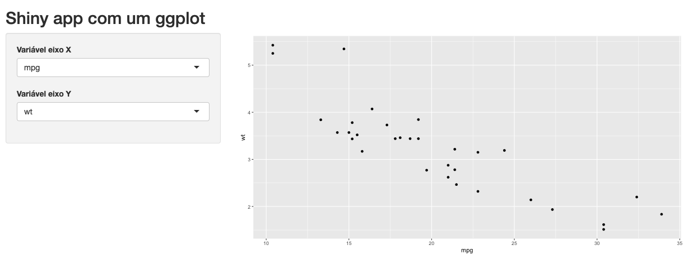

library(shiny)
library(ggplot2)
colunas <- names(mtcars)
ui <- fluidPage(
titlePanel("Shiny app com um ggplot"),
sidebarLayout(
sidebarPanel(
selectInput(
"varX",
label = "Variável eixo X",
choices = colunas
),
selectInput(
"varY",
label = "Variável eixo Y",
choices = colunas,
selected = colunas[6]
)
),
mainPanel(
plotOutput("grafico")
)
)
)
server <- function(input, output, session) {
output$grafico <- renderPlot({
ggplot(mtcars, aes(x = .data[[input$varX]], y = .data[[input$varY]])) +
geom_point()
})
}
shinyApp(ui, server)6 Shiny na prática I
6.1 Importando bases de dados
6.2 Gráficos com ggplot2
Gráficos são a alegria da festa na hora de comunicarmos os resultados de uma análise de dados. Embora possamos usar tabelas, textos ou caixinhas coloridas com valores para comunicar nossos resultados, são eles que geralmente chamam e prendem a atenção de quem está utilizando o app.
O pacote ggplot2 é uma ótima ferramenta para produzirmos gráficos no R. Quando entendemos a sua sintaxe, nos tornamos capazes de fazer uma variedade enorme de gráficos e dar a eles a cara que quisermos.
Nada do que o pacote ggplot2 tem para oferecer se perde quando estamos construindo gráficos dentro de um Shiny app. Pelo contrário, ainda ganhamos um novo recurso!
Para inserir um ggplot em um aplicativo Shiny, utilizamos a dupla de funções plotOutput()/renderPlot(). Essas funções estão preparadas para receber um objeto gerado pelas funções do ggplot e renderizá-lo em uma imagem, que será inserida no HTML do app por meio da tag <img>. Veja um exemplo abaixo.

O objeto gerado pela função ggplot() é uma lista com classe gg e ggplot, que contém todas as informações necessárias para o R desenhar o gráfico.
library(ggplot2)
p <- ggplot(mtcars, aes(x = wt, y = mpg)) +
geom_point()
class(p)[1] "gg" "ggplot"names(p)[1] "data" "layers" "scales" "mapping" "theme"
[6] "coordinates" "facet" "plot_env" "labels" Repare que, se salvássemos o ggplot em um arquivo (.png por exemplo), poderíamos simplesmente usar a dupla imageOutput()/renderImage() para inserir um gráfico no nosso app, já que essas funções também criam uma tag <img>, mas a partir de um arquivo de imagem local.
Mas não precisar salvar o ggplot em um arquivo não é a única vantagem de utilizarmos as funções plotOutput()/renderPlot(). Essas funções inserem um objeto intermediário no diagrama de reatividade do app: o plotObj. Esse objeto é justamente a lista gerada pelas funções que utilizamos na construção do gráfico e que só é recalculado quando um dos inputs existentes no código da função renderPlot() muda.
Já o gráfico renderizado depende não apenas desse plotObj, mas também do comprimento e altura da janela do navegador de quem estiver utilizando o app. Dessa maneira, o gráfico é renderizado não apenas quando o plotObj muda, mas também quando o espaço disponível para a tag <img> na tela muda. Nesse segundo caso, o R gera o gráfico novamente, redesenhando seus elementos para a nova proporção de comprimento e altura. E o melhor é que ele faz isso sem precisar rodar o código da função renderPlot() novamente, pois tudo o que ele precisa já está salvo no plotObj.

Sem esse recurso, nossos gráficos seriam apenas imagens sendo esticadas e achatadas, o que provavelmente os deixaria pixelados. Ao contrário do que acontece no R Markdown, em um relatório HTML ou em um flexdashboard por exemplo, no Shiny não precisamos nos preocupar muito com as dimensões de um ggplot. Ele será sempre automaticamente otimizado para o espaço disponível na tela.
Mas nem tudo são flores… Por melhor que consigamos mexer no visual do nosso ggplot utilizando a função theme(), no fim do dia ele continuará sendo apenas uma imagem no nosso app. Isso significa que não será possível atribuir a ele qualquer comportamento interativo, como tooltips, drildown ou ações geradas por cliques no gráfico. Para isso, precisaremos utilizar as bibliotecas gráficas próprias para a Web, que utilizam JavaScript para criar esses recursos. Falaremos sobre elas no Capítulo 8.
6.3 Animações de carregamento
É muito comum termos visualizações no nosso app que demoram para serem geradas. Quando estamos carregando o app, isso pode fazer com que parte da UI fique em branco, parecendo que a página está quebrada ou fazendo com que alguém passe em branco pelo output que você teve tanto trabalho para fazer. Quando a visualização está sendo recalculada, o padrão do Shiny é deixar a versão anterior acinzentada até que a nova apareça, o que pode gerar estranheza e também passar a ideia de que o aplicativo quebrou.
É uma boa prática sempre avisarmos a quem estiver usando o app que alguma coisa está acontecendo por trás das cortinas. Quando a espera é muito longa, devemos sempre que possível explicar o porquê a pessoa está esperando e dar uma estimativa do tempo. Nesses casos, barras de carregamento são a melhor alternativa. Falaremos delas na próxima seção.
Quando a espera não é tão grande (entre 2 e 10 segundos, por exemplo), animações giratórias ou de looping infinito podem ser utilizadas para indicar que algo vai aparecer ali e reduzir um pouco a percepção do tempo de espera.
Nesta seção, falaremos de dois pacotes que deixam muito simples a tarefa de incluir essas animações em nossos outputs: o shinycssloaders e o shinyWidgets.
Se você ainda não tem esses pacotes instalados, ambos estão no CRAN:
install.packages("shinycssloaders")
install.packages("shinyWidgets")O shinycssloaders é um pacote mantido pelo Dean Attali que possui uma única função: withSpinner(). Para colocar a animação de carregamento em uma visualização, basta colocar a função *Output() dentro da função withSpinner(). Sempre que ela estiver sendo calculada, um spinner será mostrado no lugar.
Rode o Shiny app abaixo para ver um exemplo:
library(shiny)
ui <- fluidPage(
titlePanel("Exemplo shinyWidgets::addSpinner"),
sidebarLayout(
sidebarPanel(
selectInput(
inputId = "variavel",
label = "Escolha uma variável",
choices = names(mtcars)
)
),
mainPanel(
shinycssloaders::withSpinner(
plotOutput(outputId = "histograma"),
type = 4,
color = "orange",
size = 2
)
)
)
)
server <- function(input, output, session) {
output$histograma <- renderPlot({
Sys.sleep(5)
hist(mtcars[[input$variavel]])
})
}
shinyApp(ui, server)Além várias opções de animações diferentes, que você pode trocar no argumento type, também é possível ajustar o tamanho, a cor, a cor de fundo e até usar uma imagem própria como animação1.
O pacote shinyWidgets é mantido pela equipe da dreamRs. Além de diversos widgets muito úteis, ele possui a função shinyWidgets::addSpinner(). Assm como a função shinycssloards::withSpinner(), basta embrulhar suas funções *Output() com a função shinyWidgets::addSpinner() para adicionar a animação às suas visualizações.
São diversas opções de animação, escolhidas por meio do argumento spin. Aqui você pode customizar apenas a cor delas. Rode o app a seguir para ver um exemplo.
library(shiny)
ui <- fluidPage(
titlePanel("Exemplo shinyWidgets::addSpinner"),
sidebarLayout(
sidebarPanel(
selectInput(
inputId = "variavel",
label = "Escolha uma variável",
choices = names(mtcars)
)
),
mainPanel(
shinyWidgets::addSpinner(
plotOutput(outputId = "histograma"),
spin = "cube",
color = "purple"
)
)
)
)
server <- function(input, output, session) {
output$histograma <- renderPlot({
Sys.sleep(5)
hist(mtcars[[input$variavel]])
})
}
shinyApp(ui, server)6.4 Barras de carregamento
6.5 Usando Markdown para textos
É comum precisarmos colocar em nossos aplicativos páginas com orientações, informações adicionais ou referências.
Essas páginas geralmente são compostas por textos, links e imagens, facilmente produzidos em um arquivo Markdown. Construir esses elementos HTML dentro da UI dá bem mais trabalho, pois tudo precisa ser encapsulado por funções da lista shiny::tags$.
Por exemplo, vamos supor que queiramos colocar a seguinte mini bio em um app que estamos fazendo.
Rick Sanchez
Procurado por crimes contra o espaço interdimensional. Saiba mais aqui.
O arquivo Markdown para construir essa mini bio seria bem simples:
<center>
<img src="img/rick.jpeg" width="130px" style="border-radius: 65px;"/>
**Rick Sanchez**
Procurado por crimes contra o espaço interdimensional. Saiba mais [aqui](https://rickandmorty.fandom.com/wiki/Rick_Sanchez).
</center>Construir a mesma minibio na UI é bem mais burocrático.
fluidPage(
fluidRow(
column(
width = 12,
shiny::tags$img(
src = "img/rick.jpeg",
width = "130px",
style = "border-radius: 65px; display: block; margin: auto;"
),
shiny::tags$p(
shiny::tags$strong("Rick Sanchez"),
style = "text-align: center;"
),
shiny::tags$p(
style = "text-align: center;",
"Procurado por crimes contra o espaço interdimensional. Saiba mais",
shiny::tags$a(
href = "https://rickandmorty.fandom.com/wiki/Rick_Sanchez",
"aqui"
)
)
)
)
)Mesmo um exemplo simples já começa a deixar claro o problema: produzir muitos elementos HTML na UI rapidamente transforma seu código em um emaranhado de funções aninhadas. O mesmo vale para textos muito grandes. Embora nesse caso nem sempre tenhámos muitas tags HTML para criar, scripts R não foram feitos para atender os cuiddos que textos carecem.
A melhor prática nessas situações é justamente transferir esses elementos para um arquivo Markdown e pedir que o Shiny o transforme em HTML e o inclua no lugar adequado apenas na hora do runApp(). Para isso usamos a função shiny::includeMarkdown().
Supondo que salvamos o markdown da mini bio em um arquivo rick.md, a nossa UI então ficaria:
ui <- fluidPage(
fluidRow(
column(
width = 12,
includeMarkdown("rick.md")
)
)
)Vale ressaltar que essa função compila arquivos Markdown (.md) e não R Markdown (.Rmd). Se quisermos rodar códigos R para gerar saídas HTML, devemos fazer isso dentro do próprio Shiny.
Pode ser uma imagem estática ou GIF.↩︎